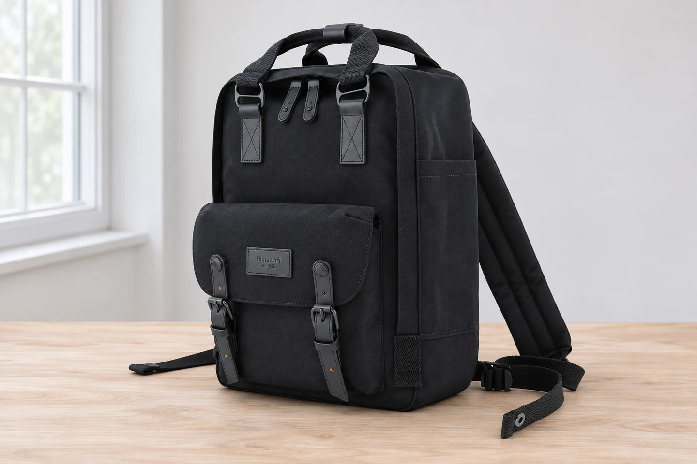
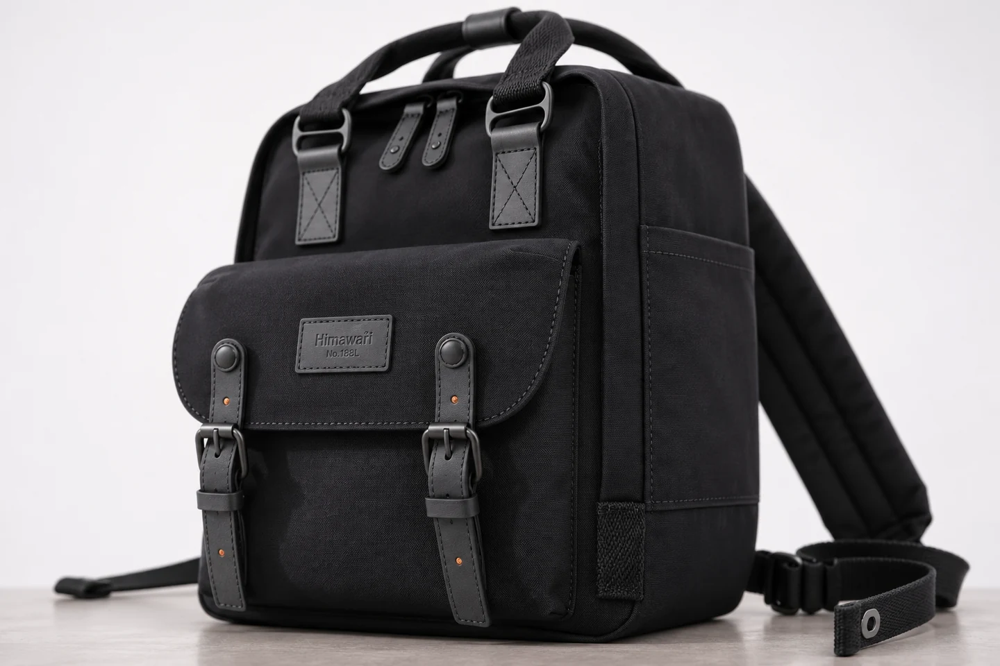
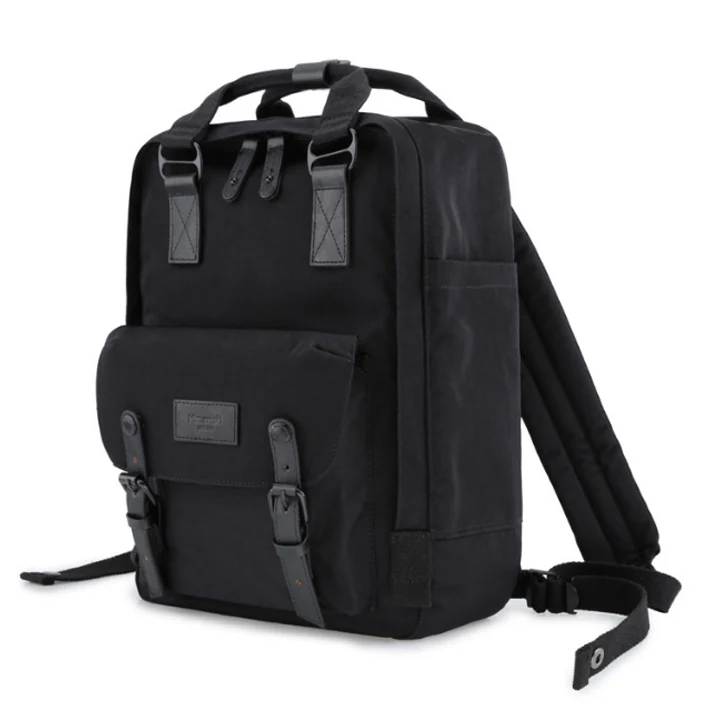

백팩 앞 버클이 책상에 닿지 않게 내려놓으려면

가방 안쪽을 보려고 백팩의 앞판을 책상에 대고 눕힙니다. 어깨끈이 위로 나와 정리는 쉬운데 앞에 붙은 버클에서 딱 소리가 날 수 있습니다. 손을 놓은 뒤 가방이 한쪽으로 기울면 입구를 열 때도 몸판이 따라 움직입니다. No.188L 블랙의 앞 포켓에는 덮개와 아래로 내려오는 두 끈, 그 사이의 버클이 보입니다. 가방의 어느 면을 받쳤을 때 버클이 먼저 닿는지, 손을 떼기 전에 확인하는 순서를 따라갑니다.
손잡이를 든 채 먼저 보이는 면
No.188L 실제 제품 사진은 앞판과 한쪽 옆면이 함께 보이는 사선입니다. 사각 몸판 앞에 포켓이 나오고 덮개 아래에 버클 두 개가 자리합니다. 옆쪽에서 보면 덮개를 포함한 포켓이 앞판과 같은 높이에서 끝나지 않습니다. 이 점은 어깨끈이 보이는 등판 사진만 봐서는 알기 어렵습니다. 가방을 세울 수 있는 낮은 자리가 있다면 바닥 전체를 먼저 받치고 앞 버클은 책상 모서리 밖으로 억지로 빼지 않습니다. 받치는 면이 좁아서 가방 밑이 떠 있다면 조금 안으로 옮기거나 더 넓은 자리를 찾습니다.
닫힌 가방을 손잡이로 든 채 천천히 앞으로 돌려 보면 바깥으로 나온 부분이 자연스럽게 눈에 들어옵니다. 앞면이 아래로 돌아올수록 포켓의 볼록한 면과 버클이 낮아집니다. 평평한 판 위에서 버클이 먼저 닿을지는 포켓에 넣은 짐과 덮개 모양에 따라 달라질 수 있습니다. 한 손으로 손잡이를 계속 들고 다른 손으로 가방 바닥이나 등을 받칩니다. 가방을 공중에 오래 들 필요는 없어요. 손을 놓기 직전 무엇이 먼저 닿는지만 보면 됩니다.

닿는 소리가 들리면 어디를 받칠지 바꿉니다
가방 앞면이 바닥을 향하는 동안은 버클의 위치가 가려집니다. 먼저 닿는 부분을 눈으로 놓쳤다면, 이미 닿은 상태에서 가방을 끌어당기기 전에 다시 들어 돌려보세요. 버클 둘 중 하나만 책상에 닿은 모양이면 몸판을 약간 눌러 반대편 버클을 붙일 필요가 없습니다. 가방을 똑바로 세워 바닥을 받치고 다시 입구를 열 수 있는 자리인지 봅니다. 낮은 선반처럼 위 공간이 부족하면 가방에 들어 있는 물건부터 일부 꺼내거나 가방을 옮겨 두 손이 다 닿는 쪽에서 열어봅니다. 메인 지퍼가 앞포켓과 다른 위치라서 버클을 만질 손과 지퍼를 당길 손이 놓일 자리를 따로 볼 수 있습니다.
바닥으로 세울 수 없을 때는 옆면이나 등판이 닿는 배치가 가능한지도 살핍니다. 측면 포켓에 단단한 물병이 있거나 어깨끈의 조절 부품이 한곳에 모여 있으면, 방향만 돌려도 다른 돌출부가 아래로 갈 수 있습니다. 어느 한 자세가 늘 낫다고 정하기보다 실제로 쓰는 짐을 넣은 날을 기준으로 고르면 됩니다. 눈높이를 조금 낮춰 책상과 가방 사이를 보면 바닥이나 몸판이 닿는 부분, 어깨끈을 옆으로 빼둘 자리를 알아보기 쉽습니다. 내용물끼리 쏠리도록 가방을 흔들어서 시험할 이유는 없습니다.
앉은 채 포켓에서 꺼낼 때는 한 손으로 받쳐봅니다
앞포켓의 덮개를 볼 차례라면 앞판을 자신의 방향으로 향하게 합니다. 버클이 책상에 안 닿아도 손끝이 책상 모서리 쪽으로 꺾이면 여는 동작이 막힙니다. 가방 아래에 손을 받쳐 기울일 때는 앞쪽에 떨어질 수 있는 물건을 먼저 챙깁니다. 몸판을 받친 손으로 조금만 기울이고 다른 손으로 덮개를 다룰 수 있는지 확인하세요. 포켓 양쪽 끈은 서로 가까이 있으므로 한쪽을 당길 때 덮개 전체가 이동하는지도 볼 수 있습니다. 빼려는 물건이 깊숙이 들어갔다면 입구를 더 넓혀야 하는지, 가방을 내 쪽으로 돌리는 것으로 충분한지 한 번씩 해봅니다.

열 때 자주 쓰는 두 방향을 따로 봅니다
같은 가방이라도 노트 한 권을 빼는 동작과 몸판 아래쪽을 정리하는 동작은 자리가 다릅니다. 위 지퍼만 열면 되는 날에는 세운 채 입구를 여는 방법부터 해봅니다. 가방 밑을 평평하게 받친 뒤 남는 책상 면적이 적다면 꺼낸 노트를 먼저 놓을 자리를 비워둡니다. 입구를 끝까지 열어 깊은 곳을 보는 날에는 옆으로 놓고 지퍼 쪽이 자신을 향하게 돌릴 수 있습니다. 몸판이 옆면으로 기울었는지, 버클 끈이 밑으로 말려 들어갔는지 확인해야 자세를 바꾼 효과가 있습니다.
반복해서 쓰는 책상에서 비교한다면 빈 가방을 한 번 놓고 평소의 짐을 담은 가방을 한 번 놓아보세요. 단단한 짐이 들어 있는 쪽이 아래에 가면 몸판의 닿는 면도 달라집니다. 몇 도 기울어지는지 잴 필요는 없습니다. 버클이 뜨는지와 지퍼를 당겼을 때 가방이 함께 움직이는지를 두 방향에서 보면 충분합니다.
다시 들기 직전에 버클과 책상 사이를 확인합니다
앞판에서 늘어진 부품이 테이블 반대편에 가려져 보이지 않을 때는 가방을 들어 올리는 중에 책상 아래 모서리와 닿을 수 있습니다. 꺼낸 물건을 한쪽으로 치우고 덮개와 여밈을 먼저 확인합니다. 가방을 들어 돌릴 때 옆에 놓인 컵이나 노트와 너무 가까이 있지 않은지도 보세요. 손잡이를 잡았는데 예상보다 무겁다면 가방을 테이블 위로 다시 낮추고 몸판을 받치는 손을 바꿔 봅니다. 버클 끈 대신 위 손잡이로 가방을 듭니다. 검은색 부품은 어두운 책상 아래에서 찾기 어려우니 손잡이에 힘을 주기 전에 앞쪽 덮개가 걸린 곳이 없는지 한 번 보세요.
No.188L의 외부 크기는 28 × 39 × 15cm로 안내됩니다. 이 숫자만으로 짐을 넣은 상태에서 버클이 앞으로 얼마나 나오는지, 책상 모서리를 넉넉히 지나가는지 알 수는 없습니다. 집에서 주로 여는 자리 한 곳을 골라 가방을 거기에 놓아 보세요. 앞판을 아래로 둘 때 부품이 먼저 닿는다면 가방을 끌어서 고치는 동작부터 줄입니다. 가방이 몸판으로 안정적으로 받쳐지고 손이 지퍼와 덮개를 따라가는 길이 남는 자세를 한 번 찾으면 다음에도 같은 자리를 쓰기 쉽습니다.